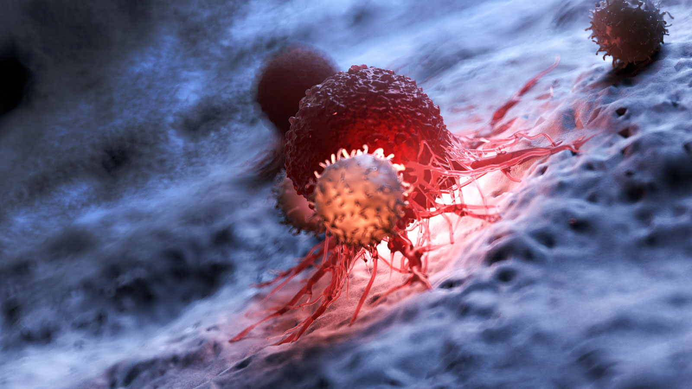

Cytokine storms and T cell counts may offer clues on how to treat COVID-19
aperture':'0','credit':'','camera':'','caption':'','created_timestamp':'0','copyright':'','focal_length':'0','iso':'0','shutter_speed':'0','title':'','orientation':'0'}' data-image-title='frontiers-immunology-reduction-functional-exhaustion-t-cells-coronavirus-covid19' data-large-file='https://frontiersinblog.files.wordpress.com/2020/04/frontiers-immunology-reduction-functional-exhaustion-t-cells-coronavirus-covid19.jpg?w=940' data-medium-file='https://frontiersinblog.files.wordpress.com/2020/04/frontiers-immunology-reduction-functional-exhaustion-t-cells-coronavirus-covid19.jpg?w=300' data-orig-file='https://frontiersinblog.files.wordpress.com/2020/04/frontiers-immunology-reduction-functional-exhaustion-t-cells-coronavirus-covid19.jpg' data-orig-size='1600,900' data-permalink='https://blog.frontiersin.org/frontiers-immunology-reduction-functional-exhaustion-t-cells-coronavirus-covid19/' sizes='(max-width: 1024px) 100vw, 1024px' src='https://frontiersinblog.files.wordpress.com/2020/04/frontiers-immunology-reduction-functional-exhaustion-t-cells-coronavirus-covid19.jpg' srcset='https://frontiersinblog.files.wordpress.com/2020/04/frontiers-immunology-reduction-functional-exhaustion-t-cells-coronavirus-covid19.jpg?w=1024 1024w, https://frontiersinblog.files.wordpress.com/2020/04/frontiers-immunology-reduction-functional-exhaustion-t-cells-coronavirus-covid19.jpg?w=150 150w, https://frontiersinblog.files.wordpress.com/2020/04/frontiers-immunology-reduction-functional-exhaustion-t-cells-coronavirus-covid19.jpg?w=300 300w, https://frontiersinblog.files.wordpress.com/2020/04/frontiers-immunology-reduction-functional-exhaustion-t-cells-coronavirus-covid19.jpg?w=768 768w, https://frontiersinblog.files.wordpress.com/2020/04/frontiers-immunology-reduction-functional-exhaustion-t-cells-coronavirus-covid19.jpg 1600w'>
Posted On: 2020-05-01T00:00:00

Content Date: 2020-05-01
Download Date: 2021-07-10
Document ID: L0C04F4WW